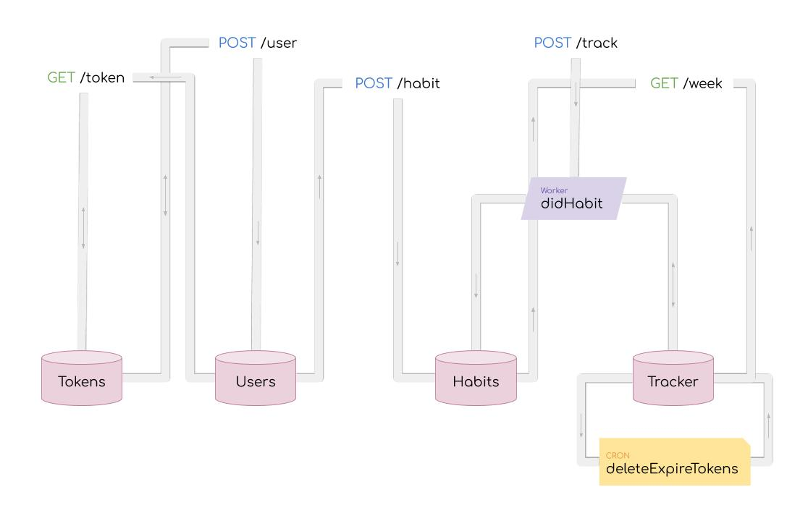
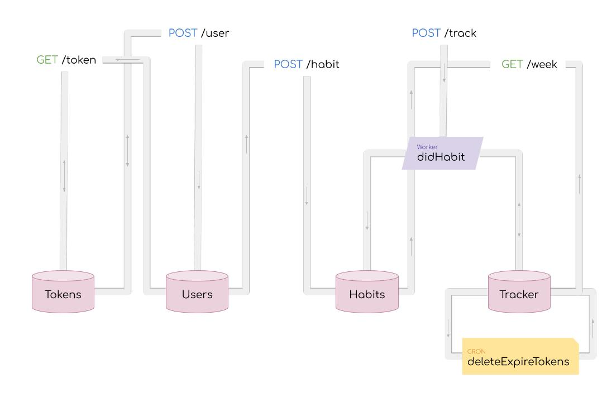

Navigate your codebase
Users have trouble getting around in their code base
Dark lays it's structural elements (code and data schemas) in floating boxes with no order to them. Users spend alot of time panning, dragging, jumping around their project space.
Problem 1: Checking up on DB schemas
Users spend a lot of time dragging databses close to the code the code chunks that uses it. Because DB::set requires the data inserted to match the schema exactly.
When their function references a DB it is even worse! Since functions are in their own seperate space, users must to go back to the main space to see the DB schema. They must either have fantastic short term memory, or take a screenshot of the DB double check their code.
Problem 2: Working with functions
Users can create functions, which will be accessible throughout their own project. But these functions are accessible within the main space; they exist in their own little world isolation. They are not accessible from the code that uses it, and only reached through clicking on a link in the sidebar.
Problem 3: Understanding workers
Workers are like async functions that live in the main space. But that doesn't make working with them any easier.

Unlike functions they take only one argument event of type Any. The user has to drag them near their code to determine its expected input is, just like DBs. But unlike DBs, which have a set schema, the user must read through the code to figure out what is the expected type and structure of the input.
How did we get here?
Problems we face today are created by people in the past with the best intentions
The founder's vision for Dark is to bring data into development. He would start off with "imagine a city, where you have boroughs and neighborhoods...", he wanted constructs in Dark to be laid out as if they are on a map. The value of Dark is it would show users' live (or cumulative) traffic as it flowed through the codebase.
The floating boxes (of code and DBs) are one day suppose to have dots/lines flowing between them to show user live traffic. They will organize code for developers instead of having files. File systems, he theorized, are arbitrary ways of splitting code. It gives developers more problems to worry about, such as dependency cycles.
Let's think through the city analogy
 

If the endpoints and datastores are points of interest, then the paths data may take are streets and highways.

The path a single trace will take is a trip.


Over time we can construct a cumulative flow of illustrate the popularity of certain paths. The developer will know which parts of the code base, they should devote more resources to.
Unfortunately, most of our users don't have live traffic yet*
for the traffic feature to be useful. They find Dark such a frustrating experience they never finish their projects.
They struggle understand what is going on in their codebase because everything is too disorganized.
At the time of this project (early 2019). Now we have many users with live traffic
First, we must pave the streets
How can we help developers understand their code base? So they may write, debug, and edit code with ease?For this case study, we'll be using a simple habits tracker application.
The you sets a weekly goal for how many times you want to do the activity (ie: run 3 times a week). When you update with a habit done, the API checks to see if you've reached your goal. If you have, you'll get a text with a cute meme, otherwise you'll just get an motivational quote instead.

 What is it that is missing? Send meme or quote!
What is it that is missing? Send meme or quote!